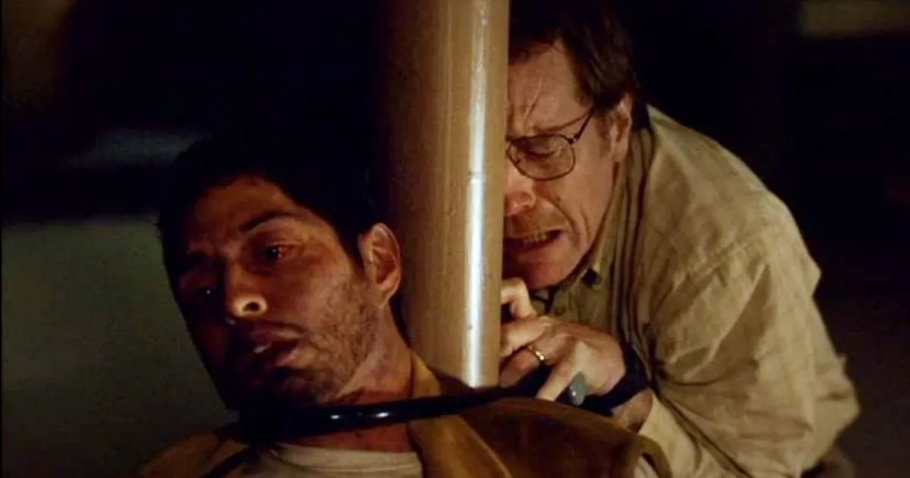
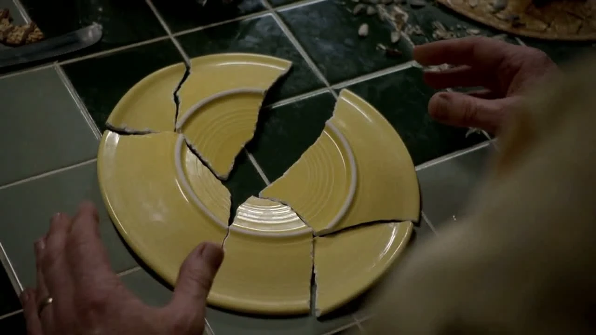

Garis Yang Terlampaui
Fokus utama episode ini adalah dilema moral terbesar yang pertama kali dihadapi Walter White: apa yang harus dilakukan terhadap Krazy-8 yang masih terkurung di basement. Walt bergulat dengan hati nuraninya, bahkan membuat daftar pro dan kontra untuk membunuhnya. Sementara itu, Skyler mulai curiga dengan perilaku aneh dan kebohongan suaminya, yang membuatnya mulai menyelidiki aktivitas Walt. Di sisi lain, Jesse yang trauma dengan kejadian sebelumnya, melarikan diri dari rumahnya.
Episode ini adalah studi karakter yang mendalam dan brilian, terutama untuk Walter White. Dengan tempo yang lebih lambat, "And the Bag's in the River" membangun ketegangan psikologis yang luar biasa. Episode ini menunjukkan bahwa kengerian sesungguhnya di dunia Breaking Bad bukanlah ledakan atau tembak-menembak, melainkan pergulatan batin yang terjadi dalam pikiran seseorang. Performa Bryan Cranston saat menampilkan kerapuhan, ketakutan, dan kalkulasi dingin dalam satu waktu adalah inti dari kekuatan episode ini.
Adegan di basement saat Walt pingsan dan menjatuhkan piring adalah puncaknya. Setelah berbagi momen kemanusiaan dengan Krazy-8, Walt memutuskan untuk membebaskannya. Namun, saat memungut pecahan piring, ia menyadari bahwa Krazy-8 telah menyembunyikan satu pecahan untuk dijadikan senjata. Momen realisasi di wajah Walt, di mana harapan seketika berubah menjadi pengkhianatan dan keputusan final, adalah titik di mana Walt yang lama benar-benar "mati". Tindakannya mencekik Krazy-8 dengan kunci sepeda bukan lagi pembelaan diri yang panik, melainkan sebuah eksekusi yang disadari. Inilah pembunuhan pertamanya, dan garis batas moralnya telah resmi terlampaui.